/* Моя кошка замечательно разбирается в программировании. Стоит мне объяснить проблему ей - и все становится ясно. */
John Robbins, Debugging Applications, Microsoft Press, 2000

/* Моя кошка замечательно разбирается в программировании. Стоит мне объяснить проблему ей - и все становится ясно. */
John Robbins, Debugging Applications, Microsoft Press, 2000
Ресурсы изображений
Ресурсы фигур
Градиенты
Layer List
State List
LevelListDrawable
Получить имя ресурса
Android генерирует идентификаторы ресурсов для файлов изображений, расположенных в подкаталоге /res/drawable. Поддерживаются файлы PNG (самый предпочтительный), GIF, JPG. Для каждого файла изображения, который находится в этом каталоге, генерируется уникальный идентификатор на основе имени файла без расширения. Например, если у файла имя cat.jpg, то для него будет создан идентификатор ресурса R.drawable.cat. Нужно следить за уникальностью имен, так как если у вас будут два файла cat.jpg и cat.png, то возникнет ошибка. Кроме того, не нужно создавать дополнительных подкаталогов в папке /res/drawable, так как файлы оттуда не будут считываться.
Можно адаптировать картинки для разных разрешений и размеров экранов. Для этого нужно создать специальные папки и складывать там нужные картинки. Например, для различных разрешений экрана используются папки drawable-hdpi, drawable-mdpi, drawable-ldpi и пр.. Существует аналогичное деление для размеров экрана: drawable-normal, drawable-large и т.д.. Можно совмещать эти способы и создавать папки типа drawable-normal-hdpi. Для изображений, которые должны оставаться неизменными вне зависимости от разрешения экрана, следует создать папку drawable-nodpi.
Для памятки приведу используемые размеры изображений для значков и фона экрана:
Чтобы сослаться на изображение из res/drawable в XML-файлах разметки, используйте следующий синтаксис:
<Button
android:id="@+id/button1"
...
android:background="@drawable/cat"
</Button>
Обратите внимание, что в любом случае мы обращаемся к ресурсу как drawable, а не drawable-hdpi или как-то еще.
Программным способом можно достучаться до изображения следующим образом:
// вызываем getDrawable для получения изображения
BitmapDrawable bd = activity.getResources().getDrawable(R.drawable.cat);
// Затем можно использовать полученый объект, чтобы установить фон
button.setBackgroundDrawable(bd);
// или можно установить фон непосредственно по идентификатору ресурса
button.setBackgroundResource(R.drawable.icon);
Android включает простые ресурсы для рисования, которые можно полностью описать в формате XML. Это касается классов ColorDrawable, ShapeDrawable и GradientDrawable. Данные ресурсы хранятся в каталоге res/drawable и могут быть идентифицированы в коде приложения по именам файлов, записанным в нижнем регистре.
Если описывать эти ресурсы в формате XML и указывать атрибуты для них с помощью аппаратно-независимых пикселей (density-independent pixels), система сможет их плавно масштабировать. Как и в случае с векторной графикой, эти ресурсы могут динамически масштабироваться, отображаясь корректно и без артефактов при любых размерах и разрешениях экрана, независимо от плотности пикселов. Исключение — ресурс GradientDrawable, радиус для которого должен быть указан в пикселях.
Данный вид ресурсов на основе класса ShapeDrawable позволяет описывать простые геометрические фигуры, указывая их размеры, фон и контур с помощью тега <shape>.
Имя файла без расширения будет служить идентификатором (ID): R.drawable.filename в Java-коде и @[package:]drawable/filename в XML-файлах.
Можно создавать ресурсы фигур на основе стандартных фигур вроде прямоугольника, эллипса, линии. Для использования ресурсов фигур нужно создать в подкаталоге res/drawable XML-файл, в котором будет присутствовать тег <shape>, который в свою очередь может содержать дочерние элементы <corners>, <gradient>, <padding>, <size>, <solid>, <stroke>.
Имя файла без расширения будет служить идентификатором (ID): R.drawable.filename в Java-коде и @[package:]drawable/filename в XML-файлах.
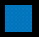
shape_rect.xml - Атрибут android:shape здесь необязателен: rectangle — это значение по умолчанию.
<selector
xmlns:android="http://schemas.android.com/apk/res/android">
<item>
<shape android:shape="rectangle">
<solid android:color="#0377BE"/>
</shape>
</item>
</selector>
Пример с градиентным прямоугольником в качестве разделителя
Создадим файл separator.xml:
<?xml version="1.0" encoding="utf-8"?>
<shape xmlns:android="http://schemas.android.com/apk/res/android"
android:shape="rectangle" >
<gradient
android:angle="0"
android:centerColor="#47CF4F"
android:endColor="#000000"
android:startColor="#000000" />
</shape>
В разметке приложения добавим код:
<TextView
android:id="@+id/tvSource"
android:layout_width="wrap_content"
android:layout_height="wrap_content"
android:text="TextView" />
<View
android:layout_width="wrap_content"
android:background="@drawable/separator"
android:layout_height="1dp" />
<TextView
android:id="@+id/tvResult"
android:layout_width="wrap_content"
android:layout_height="wrap_content"
android:text="TextView" />
<View
android:layout_width="wrap_content"
android:background="@drawable/separator"
android:layout_height="3dp" />
<Button
android:id="@+id/button1"
android:layout_width="wrap_content"
android:layout_height="wrap_content"
android:text="Button" />
У первого разделителя ширина 1dp, у второго - 3dp. Получили красивую полоску.
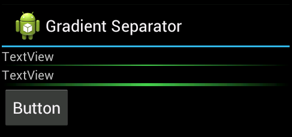
У прямоугольников можно скруглить углы при помощи тега corners
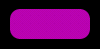
rectangle_rounded_all.xml
<?xml version="1.0" encoding="utf-8"?>
<selector
xmlns:android="http://schemas.android.com/apk/res/android">
<item>
<shape>
<solid android:color="#B902B0"/>
<corners android:radius="10.0dip" />
</shape>
</item>
</selector>
Можно закруглить углы по отдельности:
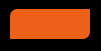
rectangle_rounded_some.xml
<?xml version="1.0" encoding="utf-8"?>
<selector
xmlns:android="http://schemas.android.com/apk/res/android">
<item>
<shape>
<solid android:color="#EC6118"/>
<corners android:bottomRightRadius="0.1dp"
android:bottomLeftRadius="7dip"
android:topLeftRadius="7dip"
android:topRightRadius="0.1dp"/>
</shape>
</item>
</selector>
shape_oval.xml
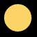
<?xml version="1.0" encoding="utf-8"?>
<selector
xmlns:android="http://schemas.android.com/apk/res/android">
<item>
<shape android:shape="oval">
<solid android:color="#FCD366"/>
</shape>
</item>
</selector>
Другой вариант с пунктиром:
<?xml version="1.0" encoding="utf-8"?>
<shape xmlns:android="http://schemas.android.com/apk/res/android"
android:shape="oval" >
<gradient
android:centerColor="#FFFF00"
android:centerX="0.5"
android:centerY="0.5"
android:endColor="#00FF00"
android:gradientRadius="100"
android:startColor="#FF0000"
android:type="radial" />
<stroke
android:dashGap="6dip"
android:dashWidth="8dip"
android:width="5dip"
android:color="#000000" />
</shape>
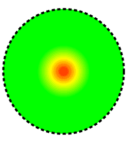
shape_ring.xml - Для кольца имеются дополнительные атрибуты:
<?xml version="1.0" encoding="utf-8"?>
<selector
xmlns:android="http://schemas.android.com/apk/res/android">
<item>
<shape android:shape="ring" android:innerRadiusRatio="3"
android:thicknessRatio="5.333">
<solid android:color="#7DBE15"/>
</shape>
</item>
</selector>
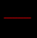
shape_line.xml - Линия может быть только горизонтальной
<?xml version="1.0" encoding="utf-8"?>
<selector xmlns:android="http://schemas.android.com/apk/res/android">
<item>
<shape android:shape="line">
<stroke android:width="1dip" android:color="#F20107" />
</shape>
</item>
</selector>
Рассмотрим пример быстрого создания фигуры в Eclipse визуальным способом. Выделите папку res/drawable (если её нет, то создайте заранее) в левой панели Eclipse. На панели инструментов нажмите на кнопку создания нового XML-файла (). В открывшемся диалоговом окне проследите, чтобы был установлен тип ресурсов Drawable, а в качестве root-элемента выберите пункт shape. Придумайте название для будущего файла, например, colorbox.xml.
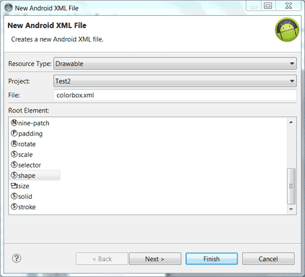
У вас появится заготовка для будущей фигуры. Установите курсор внутри области тега <shape> и нажмите комбинацию клавиш Ctrl+Пробел. Вы увидите подсказку для параметров создаваемой фигуры.
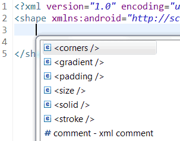
Допустим вы выбрали элемент <corners />. По такому же принципу внутри тега <corners /> нажимаем комбинацию Ctrl+Пробел, чтобы получить подсказку уже для параметров углов фигуры.
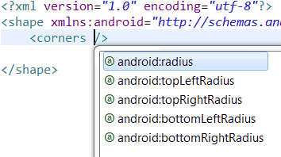
При необходимости можете переключаться между режимами визуального редактирования и непосредственного редактирования XML-файла. В итоге вы быстро получите необходимый результат для работы.
Осталось присвоить созданную фигуру в качестве фона нужному компоненту:
<TextView
...
android:background="@drawable/colorbox"
... />
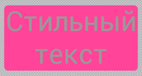
GradientDrawable позволяет создавать сложные градиентные заливки. Каждый градиент описывает плавный переход между двумя или тремя цветами с помощью линейного/радиального алгоритма или же используя метод развертки.
Для задания градиентов используется тег gradient внутри определения ресурса ShapeDrawable. Основные атрибуты: type, startColor (обязателен), endColor (обязателен) и middleColor (необязателен). Также иногда оказывается полезным атрибут centerColor.
Используя атрибут type, вы можете описать свой градиент:
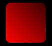
gradient_linear.xml
<?xml version="1.0" encoding="utf-8"?>
<selector
xmlns:android="http://schemas.android.com/apk/res/android">
<item>
<shape>
<gradient android:type="linear" android:endColor="#3C0000" android:startColor="#FF0202" android:angle="45.0" />
<corners android:radius="10.0dip" />
</shape>
</item>
</selector>
gradient_radial.xml
<?xml version="1.0" encoding="utf-8"?>
<selector
xmlns:android="http://schemas.android.com/apk/res/android">
<item>
<shape>
<gradient android:type="radial" android:endColor="#3C0000" android:startColor="#FF0202" android:gradientRadius="50"/>
<corners android:radius="10.0dip" />
</shape>
</item>
</selector>
Рисует развёрточный градиент с помощью перехода между цветами startColor и endColor вдоль внешнего края фигуры (как правило, кольца).
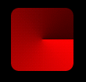
Можно использовать атрибуты android:centerX и android:centerY.
gradient_sweep.xml
<?xml version="1.0" encoding="utf-8"?>
<selector
xmlns:android="http://schemas.android.com/apk/res/android">
<item>
<shape>
<gradient android:type="sweep" android:endColor="#3C0000" android:startColor="#FF0202" />
<corners android:radius="10.0dip" />
</shape>
</item>
</selector>
gradient_circle.xml
<?xml version="1.0" encoding="utf-8"?>
<shape xmlns:android="http://schemas.android.com/apk/res/android"
android:shape="oval" >
<gradient
android:centerColor="#0f0"
android:endColor="#f00"
android:startColor="#f00"
android:type="sweep" />
<size
android:height="400dp"
android:width="400dp" />
</shape>
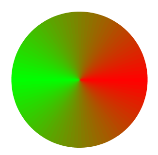
Создадим отдельный файл res/drawable/roundrect.xml и с его помощью скруглим уголки у LinearLayout, ImageView, TextView, EditText:
<?xml version="1.0" encoding="utf-8"?>
<shape xmlns:android="http://schemas.android.com/apk/res/android"
android:shape="rectangle" >
<corners android:radius="15dp" />
<gradient
android:angle="90"
android:endColor="#FFFFFFFF"
android:startColor="#FF000000"
android:type="linear" />
<stroke
android:width="1dp"
android:color="#FF000000" />
<padding
android:bottom="15dp"
android:left="15dp"
android:right="15dp"
android:top="15dp" />
</shape>
В разметке активности пишем следующее:
<LinearLayout xmlns:android="http://schemas.android.com/apk/res/android"
xmlns:tools="http://schemas.android.com/tools"
android:layout_width="match_parent"
android:layout_height="match_parent"
android:layout_margin="10dp"
android:background="@drawable/roundrect"
android:orientation="vertical"
tools:context=".MainActivity" >
<ImageView
android:layout_width="wrap_content"
android:layout_height="wrap_content"
android:background="@drawable/roundrect"
android:src="@drawable/ic_launcher"
android:contentDescription="Round Image View"
tools:ignore="HardcodedText" />
<TextView
android:layout_width="match_parent"
android:layout_height="wrap_content"
android:layout_margin="2dp"
android:background="@drawable/roundrect"
android:text="Я - TextView"
tools:ignore="HardcodedText" />
<EditText
android:layout_width="match_parent"
android:layout_height="wrap_content"
android:layout_margin="2dp"
android:background="@drawable/roundrect"
android:hint="EditText with roundrect"
android:text="Я - EditText"
tools:ignore="HardcodedText" />
</LinearLayout>
Результат:
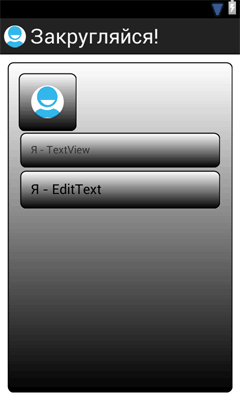
В Белом доме есть Овальный кабинет. Если вам придётся писать приложение для администрации президента США, то все элементы нужно сделать овальными. Создадим файл res/drawable/oval.xml:
<?xml version="1.0" encoding="utf-8"?>
<shape xmlns:android="http://schemas.android.com/apk/res/android"
android:shape="oval" >
<gradient
android:angle="90"
android:endColor="#FFFFFFFF"
android:startColor="#FF000000"
android:type="linear" />
<stroke
android:width="1dp"
android:color="#FF000000" />
<padding
android:bottom="15dp"
android:left="15dp"
android:right="15dp"
android:top="15dp" />
</shape>
Заменим в предыдущем примере android:background="@drawable/roundrect" на android:background="@drawable/oval".
Получим овальный интерфейс:
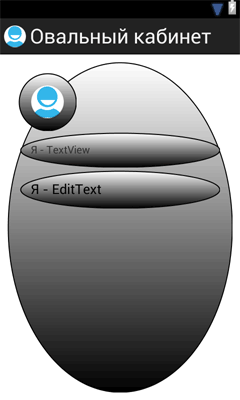
Можно задавать не только простые формы, но и их комбинации. Для этого служит класс LayerDrawable, позволяющий накладывать несколько объектов Drawable один поверх другого. Описав массив полупрозрачных объектов Drawable, вы можете создать сложную комбинацию динамических фигур и преобразований.
LayerDrawable описывается с помощью тега <layer-list>, внутри которого для каждого дочернего узла <item> используется атрибут drawable, указывающий на ресурс для наложения.
Каждый объект Drawable будет накладываться в соответствии со своим индексом — первый элемент массива размещается в самом низу.
Переделаем пример программного использования LayerDrawable на пример с использованием XML. Создадим в папке res/drawable файл layerdrawable.xml:
<?xml version="1.0" encoding="utf-8"?>
<layer-list xmlns:android="http://schemas.android.com/apk/res/android" >
<item>
<bitmap
android:gravity="center_vertical"
android:src="@drawable/blue" />
</item>
<item>
<bitmap
android:gravity="left"
android:src="@drawable/red" />
</item>
<item>
<bitmap
android:gravity="right"
android:src="@drawable/green" />
</item>
</layer-list>
Осталось применить к макету, при этом нам не нужен метод из примера по ссылке.
LinearLayout linear = (LinearLayout)findViewById(R.id.linear);
//linear.setBackground(createLayerDrawable());
linear.setBackgroundResource(R.drawable.layerdrawable); // с помощью XML
Рассмотрим другие примеры. Например, можно создать такую кнопку с бликом.
<?xml version="1.0" encoding="utf-8"?>
<layer-list xmlns:android="http://schemas.android.com/apk/res/android">
<item>
<shape>
<gradient android:startColor="#339999" android:endColor="#006666" android:angle="-90.0"/>
<corners android:radius="10.0dip" />
</shape>
</item>
<item android:bottom="20dip">
<shape>
<solid android:color="#88339999"/>
<corners android:bottomRightRadius="0.1dip"
android:bottomLeftRadius="0.1dip"
android:topLeftRadius="10dip"
android:topRightRadius="10dip"/>
</shape>
</item>
</layer-list>
Можно даже создать изображение марки.

<?xml version="1.0" encoding="utf-8"?>
<layer-list xmlns:android="http://schemas.android.com/apk/res/android">
<item>
<shape>
<solid android:color="#ffffff"/>
<stroke android:width="5dip" android:color="#ffffff" android:dashWidth="4dp" android:dashGap="4dp" />
<corners android:radius="4dip" />
<padding android:left="5dip" android:top="5dip" android:right="5dip" android:bottom="5dip"/>
</shape>
</item>
<item>
<shape>
<solid android:color="#FFFFE1"/>
<stroke android:width="1dip" android:color="#4A3321"/>
<padding android:left="10dip" android:top="10dip" android:right="10dip" android:bottom="10dip"/>
</shape>
</item>
<item>
<bitmap android:src="@drawable/image"/>
</item>
</layer-list>
У некоторых элементов управления есть различные состояния: нажато, выбрано и т.д.. Вы можете задавать изображения для любого из таких состояний.
Чтобы описать StateListDrawable, создайте файл в формате XML, в котором указываются разные ресурсы Drawable для каждого состояния компонента. Каждый атрибут вида android:state_* может принимать одно из двух значений: true или false.
Доступны следующие состояния:
Для списков есть также:
Рассмотрим примеры. Нас не устраивает внешний вид кнопки. Хочется, чтобы она выглядела так (Да еще и чтобы подсвечивалась при нажатии):
Сделать это просто. Добавляем в ресурсы изображения нормального (button_up.png) и нажатого (button_down.png) состояний кнопки. И создаем в папке drawables XML-файл со следующим содержанием (states_button.xml):
<?xml version="1.0" encoding="utf-8"?>
<selector xmlns:android="http://schemas.android.com/apk/res/android">
<item android:state_pressed="true" android:drawable="@drawable/button_down" />
<item android:drawable="@drawable/button_up" />
</selector>
Важный момент: в списке состояний нужно сначала указывать специализированные состояния, а последним должно следовать состояние по умолчанию (без атрибутов state-* вообще).
Ещё один момент. Кнопка может одновременно находиться в состоянии pressed и focused, поэтому сначала указывайте state_pressed, а затем state_focused. Иначе, если кнопка будет в состоянии focused, то состояние pressed не применится.
Теперь осталось у атрибута background для кнопки прописать созданный ресурс.
<Button android:layout_width="wrap_content" android:layout_height="wrap_content"
android:background="@drawable/states_button"
android:text="Custom button"
android:textSize="18dip"
/>
Можно обойтись без использования изображений для кнопки, а воспользоваться фигурами (states_shapes.xml).
<?xml version="1.0" encoding="utf-8"?>
<selector xmlns:android="http://schemas.android.com/apk/res/android">
<item android:state_pressed="true">
<shape>
<gradient android:type="linear" android:endColor="#6699CC" android:startColor="#99CCFF" android:angle="90.0" />
<corners android:radius="5.0dip" />
<padding android:left="20dip" android:right="20dip" android:top="7dip" android:bottom="7dip"/>
</shape>
</item>
<item>
<shape>
<gradient android:type="linear" android:endColor="#336699" android:startColor="#99CCFF" android:angle="90.0" />
<corners android:radius="5.0dip" />
<padding android:left="20dip" android:right="20dip" android:top="7dip" android:bottom="7dip"/>
</shape>
</item>
</selector>
Похожим образом можно задавать стили для RadioButtom, CheckBox и т.п.. Но тут мало того, что можно отдельным ресурсом задавать фон, так отдельным же ресурсом можно задавать саму пиктограмму через атрибут button (states_compound.xml).
<?xml version="1.0" encoding="utf-8"?>
<selector xmlns:android="http://schemas.android.com/apk/res/android">
<item android:state_checked="true">
<shape android:shape="oval">
<gradient android:startColor="#00FF00" android:endColor="#00000000" android:type="radial" android:gradientRadius="7"/>
<size android:width="10dip" android:height="10dip" />
</shape>
</item>
<item>
<shape android:shape="oval">
<gradient android:startColor="#FF0000" android:endColor="#00000000" android:type="radial" android:gradientRadius="7"/>
<size android:width="10dip" android:height="10dip" />
</shape>
</item>
</selector>
Разметка с созданными стилями
<CheckBox android:layout_width="wrap_content" android:layout_height="wrap_content"
android:button="@drawable/states_compound"
android:text="Item 1"
android:paddingLeft="20dip"
/>
<CheckBox android:layout_width="wrap_content" android:layout_height="wrap_content"
android:button="@drawable/states_compound"
android:checked="true"
android:text="Item 2"
android:paddingLeft="20dip"
/>
<CheckBox android:layout_width="wrap_content" android:layout_height="wrap_content"
android:button="@drawable/states_compound"
android:text="Item 3"
android:paddingLeft="20dip"
/>
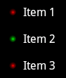
Используя LevelListDrawable, вы можете эффективно размещать ресурсы Drawable один поверх другого, указывая целочисленный индекс для каждого слоя.
<level-list xmlns:android="http://schemas.android.com/apk/res/android">
<item android:maxLevel="0" android:drawable="@drawable/cat_0"/>
<item android:maxLevel="1" android:drawable="@drawable/cat_1"/>
<item android:maxLevel="2" android:drawable="@drawable/cat_2"/>
<item android:maxLevel="4" android:drawable="@drawable/cat_4"/>
<item android:maxLevel="6" android:drawable="@drawable/cat_6"/>
<item android:maxLevel="8" android:drawable="@drawable/cat_8"/>
<item android:maxLevel="10" android:drawable="@drawable/cat_10"/>
</level-list>
Чтобы вывести на экран определенное изображение, вызовите метод setImageLevel() из представления, которому назначен ресурс LevelListDrawable, передавая в качестве параметра индекс объекта Drawable, который вы хотите отобразить.
imageView.setImageLevel(5);
Представление отобразит ресурс с соответствующим (или большим) индексом. Ресурс LevelListDrawable нужен при компоновке виджетов.
Программно к ресурсам можно обращаться так:
Resources res = getResources();
Drawable shape = res. getDrawable(R.drawable.gradient_box);
TextView tv = (TextView)findViewByID(R.id.textview);
tv.setBackground(shape);
Иногда нужно получить не сам идентификатор, а его имя в виде R.drawable.cat, что сохранить его, скажем, в базе данных. Воспользуйтесь следующим приёмом:
getResources().getIdentifier("image_name","drawable", getPackageName())
getResources().getIdentifier("your.full.package.name:drawable/image_name", null, null);
Бывает и обратная задача - из имени ресурса получить идентификатор. Тот же принцип.
String mDrawableName = "cat1"; // файл cat1.png в папке drawable
int resID = getResources().getIdentifier(mDrawableName , "drawable", getPackageName());
Строго говоря это относится не только к типу drawable, но обычно приходится встречаться с проблемой именно для них.